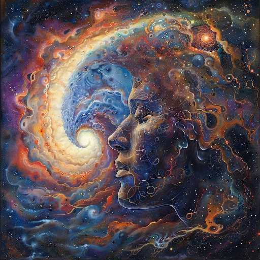

Сокрытые в глубинах эзотерических учений и мудростей, символика и архетипы представляют собой богатое сокровище мистических образов, которые обогащают наше понимание окружающего мира и внутреннего самопознания. Погрузимся в мир анализа символов и архетипов, раскрывая тайны их значения и влияния в ранних учениях.
Символы
Символы - это мощный способ передачи глубинных значений и идей, который превосходит ординарные слова. Они действуют как универсальный язык человеческого подсознания, преодолевая границы языков и культур. Каждый символ несет в себе богатство символического значения, которое может быть трактовано по-разному, в зависимости от контекста и интерпретации.
Образы, такие как огненный дракон, летящий феникс и цветок жизни, имеют глубокие резонансы в человеческом сознании и подсознании. Они переносят нас в мир мистических истин и позволяют нам соединиться с архетипическими энергиями, лежащими в основе нашего бытия. Каждый символ открывает перед нами новые уровни понимания и самопознания, открывая двери в глубины наших внутренних миров.
Другие примеры образов, которые имеют глубокие резонансы и символическое значение в человеческом сознании и подсознании:
Мировое дерево (Yggdrasil, Древо Жизни)
Мировое дерево (Yggdrasil, Древо Жизни) - представляет собой мифологический образ, который встречается в различных культурах и религиях. Это древо символизирует связь между небесами, землей и подземным миром, а также связь между всеми формами жизни.
Луна
Луна - символ женской энергии, интуиции, подсознания и бессознательного. Луна также ассоциируется с цикличностью, переменами и тайной мудростью. Ее фазы отражают различные аспекты жизни и эмоций человека.
Змей
Змей - образ змеи имеет двойственное значение. С одной стороны, она символизирует опасность, зло и смерть, а с другой - обновление, регенерацию и трансформацию. Змея часто ассоциируется с бессознательными или скрытыми аспектами личности.
Колдунья (ведьма)
Колдунья (ведьма) - это образ, который вызывает смешанные чувства у людей. Она может представлять магию, женскую силу, независимость, но также и опасность, злобу и обман. Этот образ отражает амбивалентность человеческой природы.
Каждый из этих образов имеет свою уникальную энергию и символизм, пронизывая наше сознание и подсознание. Работа с такими символами может помочь нам расширить свое понимание самого себя и мира, открывая новые уровни самопознания и глубинные аспекты нашего внутреннего мира.
Архетипы
Архетипы, в свою очередь, являются универсальными образами, отражающими базовые аспекты человеческого бытия и опыта. Архетип матери, мудреца, героя - эти образы пронизывают наши сны, мифы и представления о мире, помогая нам осознать и преобразить свое внутреннее мироощущение. Они предлагают нам алхимическое преображение, позволяя обрести глубокое понимание себя и окружающего мира.
Дополнительные архетипы, раскрывающие глубины человеческой души:
Путешественник (или Странник)
Путешественник (или Странник) - этот архетип представляет собой символ стремления к путешествиям, исследованию новых территорий, духовному поиску и приключениям. Путешественник символизирует жажду знаний, опыта и познания неизведанных горизонтов. Он может также олицетворять переходные периоды в жизни, перемену и новые возможности
Любовница
Любовница - архетип Любовницы отражает энергию чувственности, страсти, привлекательности и женственности. Она часто ассоциируется с любовью, сексуальностью и силой притяжения.
Воин
Воин - этот архетип символизирует энергию борьбы, дисциплины, мужества и преодоления препятствий. Воин может представлять защиту, силу воли и готовность действовать во имя своих целей.
Старец (Мудрая старуха)
Старец (Мудрая старуха) - архетип старца или старухи представляет мудрость, опыт, долголетие и глубокое понимание жизни. Он отражает уважение к старшим поколениям и символизирует ценность жизненного опыта.
Отшельник
Отшельник - архетип отшельника представляет собой символ уединения, самоотречения, духовного роста и погружения во внутренний мир. Он указывает на необходимость временного отстранения от мира для самопознания и внутреннего развития.
Хранительница Огня
Хранительница Огня - этот архетип представляет собой символ силы, защиты, страсти и преодоления трудностей. Хранительница Огня обычно ассоциируется с энергией огня, которая может быть как разрушительной, так и исцеляющей, и символизирует внутреннюю мощь и стойкость личности.
Путешествуя сквозь лабиринт символов и архетипов ранних учений, мы отправляемся в путь самопознания и духовной трансформации. Изучая эти мистические образы, мы обретаем возможность расширить свое сознание и обогатить внутренний мир новыми глубинами понимания. Ведь именно в символах и архетипах прячется ключ к великой мудрости, помогающей нам раскрыть тайны бытия и стать единой сущностью с бесконечной вселенной.